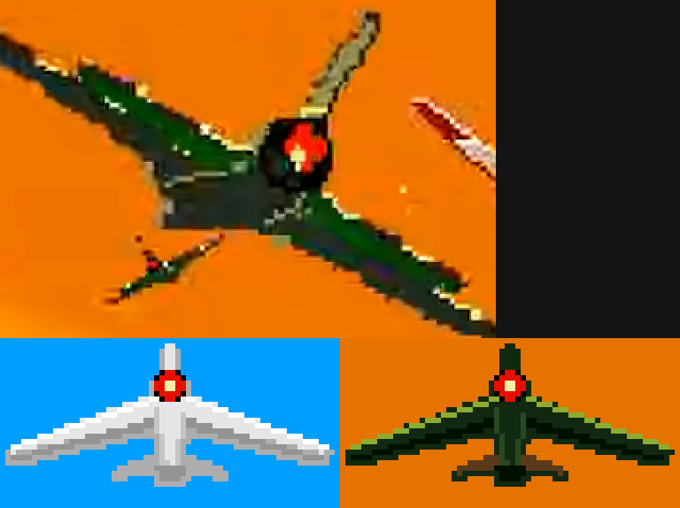
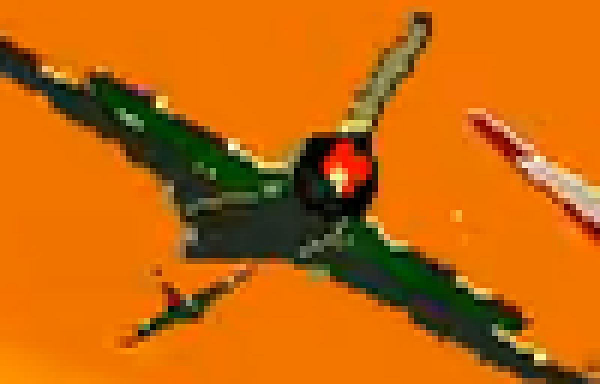
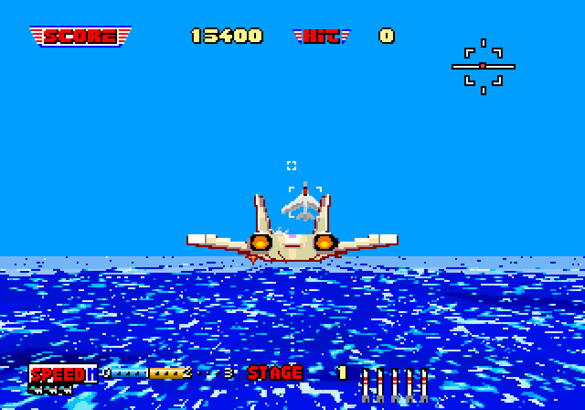

Four systems changed for real. Three fresh-context agents re-measured everything and refuted four claims, including both of mine.
The missile could not miss. Its entire impact test was a depth comparison with no lateral term, and the homing had no turn limit. On the committed build the pilot who never aimed had the higher hit rate — 100.0% against 89.6%. Aiming was worth negative. It now has a fuse radius and a turn cap, and 4 of 19 crossings miss.
But a motionless stick still gets 83% of a tracking pilot's kills. The lock cone is 22%W against the arcade's 8.3%W — enemies fly into it on their own. R10 made the missile able to miss; it did not make the lock require aiming, and the lock is where the aiming happens.
The explosion's timing is fixed — a 0.683 s plateau is now a 0.150 s flash. Its shape is not. The arcade's fireball fragments into a sparse debris spray and re-flares white-hot at +100–133 ms on three kills of four. Ours is white-hot for two frames, then a compact ball that only changes colour.

enemy-grey-head.png is
5.7% of pixels darker than L=80; the arcade's equivalent is
25–34%. A white bird where the arcade has a dark, readable dart
— and it is the head-on livery for stage 1 and stage 3, for three
enemy types. The object the player looks at longest.

I read off the effects lane's motion montage that our explosion smoke was far too small and our fireball too red. Both are refuted. The montage is not scale-matched — the arcade panels cover 0.39 of their frame, ours 0.77 of theirs, so every area I eyeballed overstated the arcade by ~3.9×. At matched depth our residue is about twice as large relative to its own fireball as the arcade's, and ours is the yellower of the two at first light.
The art critic independently confirmed my reading — and that is void too: it gridded the montage as 15 panels of 208 px where the labels prove 13 of 240. Two agents agreeing on an unreproducible image is not corroboration. The montage's generator was never saved. That is the actual defect.
ENVELOPE_X, RATE_X and
LOCK_ACQUIRE_S together — the cheapest high-value measurement left.explosions.js:498's
own comment that the decay has no white-hot core. The arcade contradicts it on 3 kills of 4.MAX_TURN_FRAC_PER_S is solved, not measured. Three attempts
were made and withdrawn, one of which tracked expanding fireballs and called them missiles.Four instruments passed their synthetic selftests and were withdrawn for failing on real frames this round — 438 of 1080 null, 15 of 193 recall, a tracker sitting on the player's own afterburner nozzles for 28 frames, and the judge's own, twice. Every one was published instead of the numbers it produced.
Five of the criteria lane's own figures were refuted during the round, four by the lanes using them. The rule it published in the morning killed its own headline by the afternoon. No R10 statistic gated anything — which is the correct answer to writing criteria and building against them in the same round.